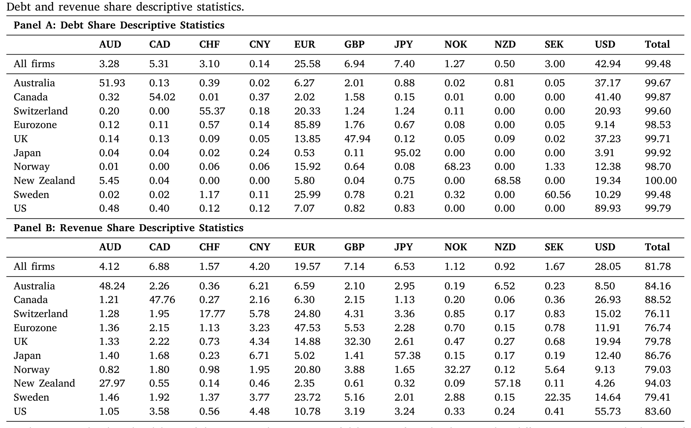
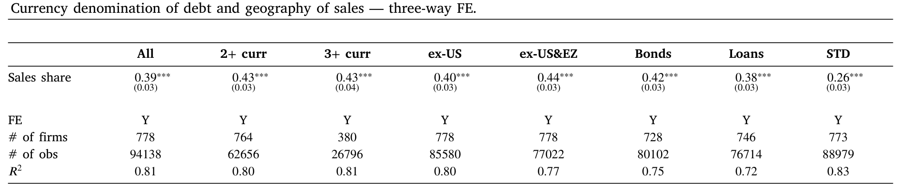
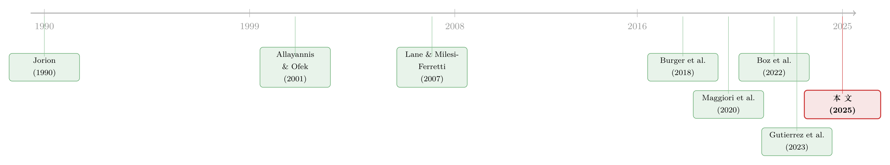

你的债，说哪国话？——大公司借钱的「货币选择」，藏在它的销售版图里
本文读的是 Colacito, Qian & Stathopoulos (2025, JFE)：发达国家大公司用哪种货币借钱，和它们在全球哪里卖货，是高度绑在一起的——某国销售占比每多 1 个百分点，该国货币计价的债务占比就多约 0.4 个百分点。但在这条「销售决定货币」的主线之外，还顽固地叠着两层偏离：公司天然偏好用本币借钱（本币固定效应高达 49%），也偏好用美元和欧元这两种国际货币借钱（美元固定效应 15%、欧元 6%）——哪怕它们在美国和欧元区一分钱销售都没有。
1 一个被忽略的「无关性」
先从一个看似无聊、其实很深的问题说起。
公司发债，要选一种货币来计价。一家日本公司，可以借日元，可以借美元，也可以借欧元。这件事重要吗？
在最干净的世界里——没有摩擦、没有税、没有违约成本的 Modigliani-Miller 世界里——答案是：不重要。我们都知道 MM 定理说资本结构（债 vs. 股）与公司价值无关；但很少有人往下多想一步：同样的逻辑，也意味着债务用什么货币计价，对公司价值同样应该无关紧要。投资者可以自己在外汇市场上把任何货币的现金流换成自己想要的货币；公司在负债端做的货币选择，理论上可以被投资者在自己的账户里「撤销」掉。换句话说，货币计价应该是不确定的（indeterminate）——公司想借哪种就借哪种，无所谓。
可现实显然不是这样。现实里，公司的债券货币结构有着极其清晰的规律。于是一个自然的问题浮出水面：如果货币选择本该无关紧要，那现实中那套清晰的规律，到底是被什么力量「钉」住的？
这篇论文给出的答案，分成一条主线和两层偏离。主线很直观——公司用哪种货币借钱，取决于它在哪里卖货。但真正有意思的，是叠在主线之上、怎么都抹不掉的那两层「偏心」。
2 主线：你在哪里卖货，就借哪种货币
作者收集了 2009 到 2019 财年、来自 13 个发达国家、市值在 2019 年至少 10 亿美元的大公司数据。销售数据来自 FactSet Revere 的 GeoRev（按地理拆分的营收敞口），债务数据来自 Debt Capital Structure Detail 报告。筛掉只借本币的公司、要求 11 个财年数据齐全，最终基准样本是 778 家公司，覆盖 11 种主要货币。
这里有个容易被略过、但对理解全文很关键的样本设定：样本里全是大公司。这些公司有钱、有人、有能力用衍生品做汇率对冲。所以作者后面想说的「连这些公司都在用债务货币来对冲销售敞口」，分量才更重——因为它们本来有更省事的对冲工具，却依然让债务的货币结构去贴合销售的地理结构。
先看一眼描述性事实。表 1 的 Panel A 把每个国家的公司、它们的债务按货币拆开。规律一眼就能看出来：强烈的本币倾向。澳大利亚公司 52% 的债是澳元，日本公司更夸张，95% 是日元；本币占比从英国公司的 48% 一路排到日本的 95%。与此同时，美元和欧元两种国际货币加起来占了全样本债务的 68.52%（美元 43%、欧元 26%）。Panel B 则是销售的地理分布——平均而言，样本公司 28% 的营收来自美国、20% 来自欧元区，两者合起来差不多是营收的一半。

Table 1
把这两张面板叠在一起看，「销售地理」和「债务货币」之间那种隐约的对应关系就呼之欲出了。但描述性统计只能到此为止。要把它做实，得控制住一大堆混杂因素。作者跑的核心回归长这样：
这里 \(i\) 是公司，\(j\) 是公司注册国（domicile），\(k\) 是货币（也对应一个市场），\(t\) 是年份。系数 \(\beta\) 衡量的，就是「债务货币占比」和「对应市场销售占比」之间的关联强度。标准误按公司（firm）聚类。
真正的识别巧思，藏在那个三向固定效应 \(\xi_{j,k,t}\) 里。它把「同一个注册国、同一种货币、同一年」这一层的所有东西都吸走了：注册国和某市场之间的地理与文化距离、两国商业周期的差异、信贷条件、利率水平、乃至任何冲击到某种货币整体信贷供给的宏观因素——统统被控制掉。于是 \(\beta\) 是靠什么识别出来的？是靠同一个注册国内部、不同公司之间债务货币结构的差异。
作者把这个识别讲得很形象：设想 2012 年两家都持有美元债的日本公司 \(i\) 和 \(i'\)（此时 \(j=\text{Japan}\)、\(k=\text{USD}\)、\(t=2012\)）。它们头上的宏观环境、日元-美元利差、日美文化距离全都一样——那为什么这两家日本公司持有的美元债占比不同？论文的猜想是：因为它们的销售地理不同，在美国卖得多的那家，就借更多美元。
结果在表 2 里。基准设定（全部公司、全部债务类型）下，销售份额系数 \(\beta = 0.39\)，在 1% 水平上显著，标准误只有 0.03，\(R^2\) 高达 0.81。它的经济含义是：公司在某国的销售占比每上升 1 个百分点，该国货币计价的债务占比就上升约 0.39 个百分点。这个数字在各种子样本里都很稳——只看持有 2 种以上货币的公司是 0.43，剔除美国后是 0.40，同时剔除美国和欧元区后是 0.44，单看债券（bonds）是 0.42，贷款（loans）是 0.38，短期债（STD）是 0.26。

Table 2
注意这里和「资产端」研究的对照。投资者那一侧，我们早就知道债券持仓会偏向本币或美元计价的资产（Burger et al., 2018；Maggiori et al., 2020）。这篇论文相当于在负债端照了一面镜子：发行人选择债务货币时，表现出和投资者持仓几乎一模一样的偏向。资产和负债两端，被同一套货币逻辑同时塑造。
接着，一个自然的问题是：会不会这根本不是「对冲销售敞口」，而只是公司在择机套利——哪种货币利率低就借哪种？作者把利差也放进来。他们确实发现了机会主义的一面：债务份额与利差正相关，公司倾向于借低收益货币，其他条件相同时。但关键在于——销售与债务之间那条链接的强度，几乎不受利差变化的影响。而且，公司债务货币结构和「外汇对冲后的利差（FX-hedged interest rate differences）」之间，基本没有关联；唯一的例外是债券借款，那里有一点点证据，符合公司在利用金融危机后那些巨大的、被 Du et al. (2018) 记录下来的抛补利率平价（covered interest rate parity, CIP）偏离去套利。但主线不是套利，主线是销售。
3 两层偏离：本币偏好与国际货币偏好
如果故事到这里就结束，它会是一篇扎实但不令人意外的论文。真正的张力，在于销售这条主线解释不掉的那部分残差里——那里顽固地住着两位「不速之客」。
第一位是本币偏好（home currency bias）。 在控制了销售地理之后，公司依然系统性地多借本币：本币固定效应是 49%。这意味着——在还没算任何「本国销售带来的额外效应」之前——平均而言公司差不多有一半的债，就已经是用本币计价的了。
第二位是国际货币偏好（international currency bias）。 同样控制住销售之后，公司还是会多借美元和欧元：主设定里美元固定效应 15%、欧元固定效应 6%。换句话说，哪怕一家公司在美国和欧元区没有任何销售，它也会把超过五分之一的债，借成这两种国际货币。
这第二层偏离是全文最反直觉、也最重要的地方。它说明债务货币选择不只是「对冲我卖货的地方」，还藏着另一股力量：够到全球资金池。验证这个猜想的证据很漂亮——当作者把债务拆成债券、贷款、短期债分开看，债券（bonds）表现出更强的国际货币偏好、更弱的本币偏好。这完全说得通：债券是面向全球投资者发行的，而全球债券投资者的持仓本就偏向本币或美元资产，所以发行人为了接入这个全球资金池，自然会更多地用美元、欧元发债。
为了把这层偏离逼到墙角，作者做了一个很狠的检验：只看那些至少 80% 营收来自本国的公司——这些公司几乎没有外销敞口可对冲。结果呢？它们依然有 8% 的美元固定效应和 5% 的欧元固定效应。销售敞口几乎为零，国际货币偏好却还在。这就基本排除了「国际货币偏好只是销售对冲的副产品」这种解释。
这两层偏离提醒我们：别把「debt currency = sales hedging」当成全部故事。本币和国际货币这两个固定效应，加起来的体量远大于销售份额贡献的那部分——销售解释的是横截面上的偏离方向，而这两个固定效应解释的是水平上的大头。一家公司的债务货币结构 ≈ 一大块本币 + 一块美元/欧元 + 跟着销售地理微调的那一层。
4 把「为什么」往前推一步：发票货币
到这里，论文已经讲清了「是什么」。但它还想回答「为什么」——为什么销售会和债务货币绑定？标准答案是「对冲」：你在美国卖货，赚的是美元现金流，于是借美元债，让负债端的美元支出去对冲资产端的美元收入。可作者主用的数据有个软肋：它只知道公司在哪个国家卖货，不知道这些销售用什么货币开发票（invoicing）。而一家德国公司卖到美国的货，未必就是用美元结算的。
这就是关键的一步反转。作者引入 Boz et al. (2022) 的国家层面出口发票货币数据——某国出口中，用美元、用欧元、用本币、用其他货币开票的份额各是多少——作为公司跨境销售货币敞口的代理变量。
逻辑链条是这样的：如果一家公司所在国，出口大量用本国货币或某种载体货币（vehicle currency）开票，那么它卖到国外，赚回来的其实并不是当地货币，而是本币或那种载体货币。这种情况下，「销售地理」就不再准确反映它真实的货币现金流敞口——于是，它的债务货币和销售地理之间的那条链接，理应更弱。
数据正是这么说的：注册在「出口更多用本币或载体货币开票」的国家的公司，其债务货币与销售地理之间的关联确实更弱。反过来，注册在「出口更多用国际货币开票」的国家的公司，其债务的国际货币偏好更强。两条都和「货币对冲」机制严丝合缝。这一步，把全文从「相关性」推向了「这种相关性确实长着对冲的样子」。
5 边际、横截面与一个对照组
几个补充结果，让画面更完整。
外延边际（extensive margin）。 不只是借多少，连「借不借」都跟销售走：在某国有销售，对应货币有债的概率高 6 个百分点；销售份额越大，借该货币的概率越高——这符合存在借款固定成本的图景（小市场销售不值得专门去借那种货币）。外延边际同样展现出强烈的本币与国际货币偏好。
横截面异质性。 更大、更国际化的公司，国际货币债务偏好显著更强、本币偏好更弱。这很合理：越国际化、越大的公司，越需要也越有能力接入全球资金池。
拉美对照组。 已有不少文献研究拉美公司的债务货币（那里美元化更极端）。作者拿 6 个拉美国家的 169 家大公司重做了一遍。结果耐人寻味：拉美公司销售与债务货币的链接弱得多，销售份额系数只有 0.25，差不多是发达国家的一半。而且，拉美公司的美元偏好和本币偏好都很强，欧元偏好却几乎不存在——凸显了美元融资对拉美公司的支配地位，这和 Alfaro et al. (2023)、Gutierrez et al. (2023) 的证据一致。换句话说，发达国家公司是「销售主导、双国际货币」，拉美公司是「美元主导、销售退居其次」。
6 文献脉络
把这篇论文放回它生长的那条藤上，会看得更清楚。
最早的源头是汇率敞口研究。Jorion (1990) 发现美国跨国公司的股权价值对汇率的敞口，和它们的海外销售份额正相关——这埋下了「销售地理 → 货币敞口」的第一颗种子。沿着这条线，Allayannis & Ofek (2001) 发现海外销售占比更高的美国大公司，更可能发行外币债来对冲；Kedia & Mozumdar (2003) 进一步把这件事拆到了单个货币的层面。这一支，是把外币债当作对冲工具来理解的传统。

接着，研究的重心从「单个公司怎么对冲」上升到「货币如何塑造全球资产配置」。Lane & Milesi-Ferretti (2007) 开创性地核算了各国的对外资产负债；Burger et al. (2018) 和 Maggiori, Neiman & Schreger (2020) 则揭示了货币计价对投资者需求的决定性作用——投资者的债券持仓强烈偏向本币或美元计价的资产。然后，一个自然的问题是：成本端呢？Du, Tepper & Verdelhan (2018) 记录了金融危机后巨大的 CIP 偏离，Liao (2020) 据此说明公司发债会对「对冲后的债务成本」做出反应，Gutierrez et al. (2023) 把秘鲁公司偏爱美元债归因于本地银行的低美元贷款利率。理论侧，Michaux (2012) 和 Salomao & Varela (2022) 则把「用外币债对冲产品市场上的汇率敞口」写进了模型。
而把「销售货币」这一维度真正补上的，是 Boz et al. (2022) 的全球出口发票货币数据——它让本文得以把「在哪卖货」细化到「赚的是哪种货币」。
这篇论文（Colacito, Qian & Stathopoulos, 2025）站在这三股力量的交汇处：它把「公司对冲（Jorion 一支）」「全球资产配置与货币霸权（Maggiori 一支）」和「发票货币（Boz 一支）」拧在一起，第一次系统地用一个大型跨国样本，刻画了发达国家大公司负债端的货币图景——既证实了销售主线，也量化了那两层抹不掉的偏好。它在资产定价里关于「谁持有这张债券决定了它的价格」的讨论（可参见《谁在持有这张债券，决定了它的价格》）的对面，补上了发行人这一侧的镜像；而关于美元的特殊地位与外溢，也可与《对着美联储「逆向操作」》对照着读。
7 评论与延伸（Q&A + 研究方向）
(a) 几个可能的疑问
Q：三向固定效应已经吸走了那么多东西，那两个「固定效应」（本币 49%、美元 15%）到底是从哪冒出来的？
它们不是被 \(\xi_{j,k,t}\) 吸收掉的那种「注册国 × 货币 × 年」共同项，而是作者在另外的设定里、专门估计的货币层面的截距——衡量在销售份额为零时、某货币（本币 / 美元 / 欧元）天然多出来的债务份额。直观上：把销售这条主线的贡献剥掉之后，债务货币结构里剩下的那块系统性水平，就是这两层偏好。它们和 \(\beta\) 不冲突，而是分别解释「水平」和「斜率」。
Q：销售和债务货币的正相关，会不会其实是反向因果——公司先借了某货币，才被迫去那个市场卖货？
这是真实的担忧。论文的设计削弱了它但没法完全杜绝：销售去布局一个海外市场、建厂建渠道，是远比调整一年期债务货币结构更慢、更黏的决策，所以「销售 → 债务货币」在时序的黏性上更可信。但严格的因果，仍要靠外生冲击（比如某市场需求的外生变化）才能钉死——这正是后续研究的空间。
Q：既然这些都是有能力用衍生品对冲的大公司，为什么还要费劲用债务货币来对冲？直接买远期/掉期不就行了？
这恰恰是论文想强调的反差。可能的解释有几个：用外币债对冲是自然对冲，省掉了衍生品的展期成本和保证金占用；债务对冲的是长期敞口，而衍生品市场在长久期上又薄又贵；更重要的是，国际货币偏好那一层根本不是对冲——它是为了接入全球资金池（债券子样本国际货币偏好更强，正是证据）。所以债务货币身兼两职：对冲 + 融资渠道，这是衍生品替代不了的。
Q：为什么欧元偏好在过去十年稳步上升，美元偏好却基本不变？
作者发现欧元偏好的上升集中体现在债券借款上，而非贷款或短期债。这指向欧元债券市场作为全球融资渠道的深化——发行人越来越多地用欧元债去够到欧洲那一池资金。美元偏好则一直稳在高位，因为美元作为主导货币的地位本就饱和、没有进一步上升的空间。
Q：拉美公司的销售-债务链接只有 0.25、欧元偏好为零，是不是说这套框架对新兴市场不成立？
不如说框架成立、但参数被另一股力量压过。拉美的故事里，美元支配（dollar dominance）太强——本地银行的美元贷款定价、投资者对美元资产的需求，把销售这条主线挤到了次要位置，也几乎抹掉了欧元这个选项。框架仍然适用，只是「国际货币偏好」在那里几乎等同于「美元偏好」。这与 Alfaro et al. (2023)、Gutierrez et al. (2023) 一致。
Q：样本只到 2019 年、只有大公司，外部有效性如何？
两个边界要诚实承认。其一，疫情、2022 年后的加息周期、美元的新一轮走强都不在样本里，而这些恰恰是货币选择最该被检验的时段。其二，结论严格只适用于市值 10 亿美元以上的大公司；中小企业既缺衍生品对冲能力、也更难发外币债，它们的货币选择很可能由另一套（更受银行关系和本币约束支配的）逻辑驱动。
(b) 几个可能的研究问题与提案
1. 货币错配与债券流动性（公司债 + 流动性方向）
【经济故事】本文讲的是发行人事前怎么选货币，但选完之后留下的「货币错配」（债务货币与现金流货币不匹配的程度）会怎样反噬二级市场？一个错配更严重的发行人，其债券在美元剧烈波动时是否流动性更差、买卖价差更宽——因为做市商更难对冲这层尾部风险？ 【可行性】中。可以用本文方法构造公司层面的「货币错配指数」，再匹配 TRACE（美元债）与各国债券交易数据看流动性指标。难点在跨市场流动性数据的可比性，以及把货币错配的因果效应从信用质量里剥离出来——需要发行人固定效应 + 货币冲击交互。
2. 外资持有人结构与发行货币的「鸡生蛋」（外资持有人方向）
【经济故事】本文猜测国际货币偏好部分源于「接入全球资金池」。能不能反过来验证：一家公司发美元/欧元债之后，其债券的外资持有人占比是否真的上升？是发行货币吸引来了外资，还是外资需求倒逼了发行货币？ 【可行性】中到高。Maggiori-Neiman-Schreger 的
Morningstar跨境持仓数据 + 本文的发行货币数据可以直接对接，用同一发行人在不同货币债券上的外资持仓差异做识别。这是 doable 的，关键是找到发行货币选择的外生变动（比如某货币债券市场准入规则的变化）。
3. 发票货币冲击作为外生变量（识别升级）
【经济故事】本文用国家层面发票货币数据做代理，但它是横截面的。如果能找到发票货币的外生变动——比如某国加入某货币区、某双边贸易协定改变结算货币惯例——就能把「发票货币 → 债务货币」这条链接从相关性推到因果。 【可行性】中。Boz et al. (2022) 数据有时间维度，可寻找发票货币份额发生突变的国家-年作为准实验。难点是这类突变往往与宏观政策同时发生，需要小心控制混杂。
4. 疫情与加息周期的样本外检验（外部有效性）
【经济故事】2020 年后美元先暴涨、利率再陡升，正是货币对冲最该「显形」的时段。本文的
0.39系数和那两层偏好，在压力期是放大还是收缩？如果对冲动机真实，错配的公司应在美元走强时承受更大的盈利冲击。 【可行性】高。FactSet Revere与债务数据可直接延展到 2024，方法现成，几乎是把本文样本往后推五年再跑一遍——低成本、高价值的复制性研究。
5. 货币选择与信用利差（信用市场方向）
【经济故事】如果公司用债务货币去对冲销售敞口，那么「对冲得好」的公司（货币错配小）是否享有更低的信用利差——因为现金流更稳、违约风险更低？这能把本文的「数量」结果连到「价格」上。 【可行性】中。需要把货币错配指数匹配到一级发行利差或二级利差，控制评级、久期、行业。识别上要处理「错配选择本身内生于公司风险」的问题，建议用发票货币代理作为工具变量。
参考文献
- Allayannis, G., Ofek, E. (2001). Exchange rate exposure, hedging, and the use of foreign currency derivatives. Journal of International Money and Finance 20(2), 273–296.
- Alfaro, L., Calani, M., Varela, L. (2023). Granular corporate hedging under dominant currency. NBER Working Paper.
- Boz, E., Casas, C., Georgiadis, G., Gopinath, G., Le Mezo, H., Mehl, A., Nguyen, T. (2022). Patterns in invoicing currency in global trade: New evidence. Journal of International Economics 136.
- Burger, J.D., Warnock, F.E., Warnock, V.C. (2018). Currency matters: Analyzing international bond portfolios. Journal of International Economics 114, 376–388.
- Du, W., Tepper, A., Verdelhan, A. (2018). Deviations from covered interest rate parity. Journal of Finance 73(3), 915–957.
- Gutierrez, B., Ivashina, V., Salomao, J. (2023). Why is dollar debt cheaper? Evidence from Peru. Journal of Financial Economics 148(3), 245–272.
- Jorion, P. (1990). The exchange-rate exposure of U.S. multinationals. Journal of Business 63(3), 331–345.
- Kedia, S., Mozumdar, A. (2003). Foreign currency–denominated debt: An empirical examination. Journal of Business 76(4), 521–546.
- Lane, P.R., Milesi-Ferretti, G.M. (2007). The external wealth of nations mark II. Journal of International Economics 73(2), 223–250.
- Liao, G.Y. (2020). Credit migration and covered interest rate parity. Journal of Financial Economics 138(2), 504–525.
- Maggiori, M., Neiman, B., Schreger, J. (2020). International currencies and capital allocation. Journal of Political Economy 128(6), 2019–2066.
- Michaux, M. (2012). Trade, exchange rate exposure, and the currency composition of debt. Working paper.
- Salomao, J., Varela, L. (2022). Exchange rate exposure and firm dynamics. Review of Economic Studies 89(1), 481–514.
我的总评：这篇论文最大的贡献，是把一个长期停留在「单个公司案例」或「拉美美元化」语境里的问题，第一次用一个干净的大型跨国样本和一套极强的三向固定效应设计，做成了一个可量化、可推广的事实——0.4 这个系数会被反复引用。它的聪明之处在于不满足于销售主线，而是诚实地把残差里那两层偏好（本币 49%、国际货币）拎出来单独命名、单独量化，并用「债券 vs. 贷款」「80% 本土销售子样本」这些切口去验证它们的来源。对识别，我最大的保留是：它本质上是一组高质量的条件相关性，而非因果——三向固定效应控制掉了注册国-货币-年的共同冲击，却没有提供一个真正外生的销售（或发票货币）变动来钉死方向；反向因果（先有融资便利、后有市场布局）在逻辑上仍可能贡献一部分。我接下来最想看到的，是把发票货币的时间变动做成准实验，以及把样本推进到 2020 年后的美元强周期——如果那两层偏好和销售系数在压力期被放大，对冲故事才算真正经受住了考验。